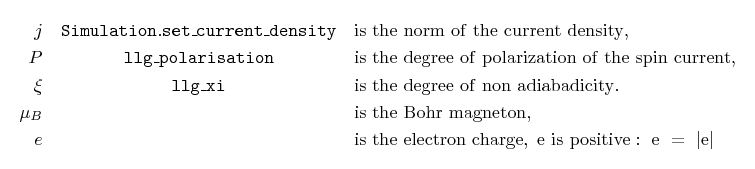

2.21. Example: Spin transfer torque (Zhang-Li model)¶
Nmag provides support for the Zhang-Li extension to the Landau-Lifshitz-Gilbert (LLG) equation [1], in order to model the interaction between a uniform electric current density and a spatially varying magnetisation. The extened LLG equation reads
where the first two terms on the right-hand side are the normal LLG equation, and the extra terms come from the Zhang-Li model, and
The central column shows the method which can be used to set the field (Simulation.set_m or Simulation.set_H_ext) or the name of the corresponding parameter in the material definition (for example, mat = MagMaterial(Ms=SI(0.8e6, "A/m"), ...)). The current density appears only throughout the quantity v, which we define as:
with:
In this and in the next examples we show how to set up a micromagnetic simulation including such spin transfer torque effects. We show how the current density can be specified and how the required parameters can be included in the material definitions.
As a first example, we consider a thin Permalloy film which develops a vortex in the center. We compute the dynamics of the vortex as a response to the application of a current.
| [1] | S. Zhang and Z. Li, Roles of Nonequilibrium Conduction Electrons on the Magnetization Dynamics of Ferromagnets, Physical Review Letters 93, 127204 (2004), online at http://link.aps.org/doi/10.1103/PhysRevLett.93.127204 |
2.21.1. Current-driven motion of a vortex in a thin film¶
The system under investigation is a 100 x 100 x 10 nm Permalloy film. The mesh is stored in the file pyfilm.nmesh.h5.
The simulation is subdivided in two parts:
- In part I, the system is relaxed to obtain the initial magnetisation configuration when the current is not applied, which is just a vortex in the center of the film.
- In part II, the vortex magnetisation obtained in part I is loaded and used as the initial magnetisation configuration. A current is applied and the magnetisation dynamics is analysed by saving periodically the data (the magnetisation, the other fields and their averages).
Here we use two separate simulation scripts to carry out part I and part II subsequentely. This is the approach that is easiest to understand. Once the basic ideas have become clear, it is often a good idea to write only one simulation script that carries out both part I and part II. (Indeed many of the parameters, such as the saturation magnetisation or the exchange coupling need to be specified in each of the two scripts leading to possible errors: for example if one decides to investigate a different material and changes the parameters just in one file and forgets the other, etc.). In the next section (Example: Current-driven magnetisation precession in nanopillars), we present a more robust approach, where both part I and part II are executed by just one script.
2.21.2. Part I: Relaxation¶
The first script carries out a normal micromagnetic simulation (i.e. no spin transfer torque), and determines the relaxed magnetisation configuration for a given geometry, material and initial configuration. It saves the final magnetisation to disk. Here is the full listing of relaxation.py :
# We model a bar 100 nm x 100 nm x 10 nm where a vortex sits in the center.
# This is part I: we just do a relaxation to obtain the shape of the vortex.
import math, nmag
from nmag import SI, at
from nsim.si_units.si import degrees_per_ns
# Define the material
mat_Py = nmag.MagMaterial(name="Py",
Ms=SI(0.8e6,"A/m"),
exchange_coupling=SI(13.0e-12, "J/m"),
llg_gamma_G=SI(0.2211e6, "m/A s"),
llg_damping=1.0)
# Define the simulation object and load the mesh
sim = nmag.Simulation()
sim.load_mesh("pyfilm.nmesh.h5", [("Py", mat_Py)], unit_length=SI(1e-9,"m"))
# Set a initial magnetisation which will relax into a vortex
def initial_m(p):
x, y, z = p
return [-(y-50.0e-9), (x-50.0e-9), 40.0e-9]
sim.set_m(initial_m)
# Set convergence parameters and run the simulation
sim.set_params(stopping_dm_dt=1.0*degrees_per_ns)
sim.relax(save=[('fields', at('step', 0) | at('stage_end'))])
# Write the final magnetisation to file "vortex_m.h5"
sim.save_restart_file("vortex_m.h5")
After importing the usual Nmag module and helper objects, we define the material, create the simulation object and load the mesh, (similar to what is shown in previous examples):
# Define the material
mat_Py = nmag.MagMaterial(name="Py",
Ms=SI(0.8e6,"A/m"),
exchange_coupling=SI(13.0e-12, "J/m"),
llg_gamma_G=SI(0.2211e6, "m/A s"),
llg_damping=1.0)
# Define the simulation object and load the mesh
sim = nmag.Simulation()
sim.load_mesh("pyfilm.nmesh.h5", [("Py", mat_Py)], unit_length=SI(1e-9,"m"))
Notice that the damping parameter llg_damping is set to a high value, to allow for quick relaxation of the magnetisation. We write a function initial_m that is being given the position of each site in the mesh as a vector p with three components, and which returns an initial magnetisation vector. This vector is chosen such that the initial magnetisation that is described by this function is likely to relax into a vortex configuration:
def initial_m(p):
x, y, z = p
return [-(y-50.0e-9), (x-50.0e-9), 40.0e-9]
The magnetisation at point p is obtained from a 90 degree rotation of the vector which connects p to the center of the film. This vector doesn’t have to be normalised: Nmag will take care of normalising it for us.
We need to instruct the simulation object sim to use this function to set the magnetisation:
sim.set_m(initial_m)
We set the criterion to be used to decide when the magnetisation has relaxed. The value used here in set_params (i.e. one degree per nanosecond) is the default value (so we could omit this, but we change the value in the second part of this example):
sim.set_params(stopping_dm_dt=1.0*degrees_per_ns)
We finally run the simulation using the relax command until the convergence criterion dm/dt < 1 degree per nanosecond is fullfilled. In the process, we save spatially resolved data for all fields at step 0, and the same data at the end of the stage (i.e. when an equilibrium has been reached, just before the relax function returns):
sim.relax(save=[('fields', at('step', 0) | at('stage_end'))])
We finally save the relaxed magnetisation to a file using the function save_restart_file, so that we can use this in part 2 as the initial configuration:
sim.save_restart_file("vortex_m.h5")
We can launch the script with the command:
$ nsim relaxation.py
The output files for this simulation will have the prefix relaxation in their names. The script saves the magnetisation at the beginning (before relaxation) and at the end (after relaxation). The magnetisations can be extracted and saved into vtk files using the command nmagpp relaxation --vtk=m.vtk, as usual. MayaVi can then be used to show the initial magnetisation (as described by the initial_m function):

The magnetisation at the end of the relaxation process:
The relaxed vortex is much smaller than the initial one. The important thing to notice is that such a magnetisation configuration has now been saved into the file vortex_m.h5 which will be used as the initial magnetisation for part II of this simulation, where we study the current driven dynamics of the vortex.
2.21.3. Part II: Current driven dynamics¶
For part II we need to use a slightly modified version of the script used for part I. Here is the full listing of stt.py:
# We model a bar 100 nm x 100 nm x 10 nm where a vortex sits in the center.
# This is part II: we load the vortex from file and apply a spin-polarised current
import nmag
from nmag import SI, every, at
# Define the material
mat_Py = nmag.MagMaterial(name="Py",
Ms=SI(0.8e6,"A/m"),
exchange_coupling=SI(13.0e-12, "J/m"),
llg_gamma_G=SI(0.2211e6, "m/A s"),
llg_polarisation=1.0,
llg_xi=0.05,
llg_damping=0.1)
# Define the simulation object and load the mesh
sim = nmag.Simulation()
sim.load_mesh("pyfilm.nmesh.h5", [("Py", mat_Py)], unit_length=SI(1e-9,"m"))
# Set the initial magnetisation: part II uses the one saved by part I
sim.load_m_from_h5file("vortex_m.h5")
sim.set_current_density([1e12, 0, 0], unit=SI("A/m^2"))
sim.set_params(stopping_dm_dt=0.0) # * WE * decide when the simulation should stop!
sim.relax(save=[('fields', at('convergence') | every('time', SI(1.0e-9, "s"))),
('averages', every('time', SI(0.05e-9, "s")) | at('stage_end'))],
do = [('exit', at('time', SI(10e-9, "s")))])
We now discuss the script with particular emphasis on the differences with the first one. One difference lies in the material definition:
# Define the material
mat_Py = nmag.MagMaterial(name="Py",
Ms=SI(0.8e6,"A/m"),
exchange_coupling=SI(13.0e-12, "J/m"),
llg_gamma_G=SI(0.2211e6, "m/A s"),
llg_polarisation=1.0,
llg_xi=0.05,
llg_damping=0.1)
Here we use two new arguments for the MagMaterial class. The first is llg_polarisation which is used to specify the spin polarisation of the conduction electrons inside the given material. The second, llg_xi, is used to specify the degree of non-adiabaticity. Note that for the damping parameter, llg_damping, we are now using a smaller value, 0.1 (these values are not realistic for Permalloy).
The script then continues by creating the simulation object and loading the mesh (which is identical to the relaxation script shown in part I). The initial magnetisation is read from the vortex_m.h5 file:
# Set the initial magnetisation: part II uses the one saved by part I
sim.load_m_from_h5file("vortex_m.h5")
Here we use the function load_m_from_h5file to load the magnetisation from the file vortex_m.h5, which was created in part I by using the function save_restart_file. We set the current density:
sim.set_current_density([1e12, 0, 0], unit=SI("A/m^2"))
The current density has norm 10^12 A/m^2 and is aligned in the x direction. We then disable the convergence check:
sim.set_params(stopping_dm_dt=0.0) # * WE * decide when the simulation should stop!
Here we decide that convergence should be reached when the magnetisation moves less than 0.0 degrees per nanosecond. This cannot happen and hence convergence is never reached: we’ll tell the relax method to exit after a fixed amount of time has been simulated:
sim.relax(save=[('fields', at('convergence') | every('time', SI(1.0e-9, "s"))),
('averages', every('time', SI(0.05e-9, "s")) | at('stage_end'))],
do = [('exit', at('time', SI(10e-9, "s")))])
We run the simulation for just 10 nanoseconds by forcing an exit with ('exit', at('time', SI(10e-9, "s"))). We also save the fields every nanosecond and save the averages more often, every 50 picoseconds. The relax method will simulate a vortex “hit” by a spin polarised current and will save the averages so that we can see how the magnetisation changes in time.
To run the script (which takes of the order of half an hour) we use as usual:
$ nsim stt.py
The output files for this simulation will start with the prefix stt. The script saves the average magnetisation periodically in time. We can therefore plot it using the following gnuplot script:
set term postscript color eps enhanced
set out "m_of_t.eps"
set xlabel "time (ns)"
set ylabel "average magnetisation (10^6 A/m)"
plot [0:10] \
"m_of_t.dat" u ($1*1e9):($2/1e6) t "<M_x>" w lp, \
"" u ($1*1e9):($3/1e6) t "<M_y>" w lp, \
"" u ($1*1e9):($4/1e6) t "<M_z>" w lp
to obtain the following graph:
2.21.4. Standard problem¶
The simulation carried out here is a (coarse) version of the recently proposed standard problem for spin transfer torque micromagnetic studies [2].
| [2] | Massoud Najafi, Benjamin Kruger, Stellan Bohlens, Matteo Franchin, Hans Fangohr, Antoine Vanhaverbeke, Rolf Allenspach, Markus Bolte, Ulrich Merkt, Daniela Pfannkuche, Dietmar P. F. Moller, and Guido Meier, Proposal for a Standard Problem for Micromagnetic Simulations Including Spin-Transfer Torque, Journal of Applied Physics, in print (2009), preprint available at http://www.soton.ac.uk/~fangohr/publications/preprint/Najafi_etal_2009.pdf |